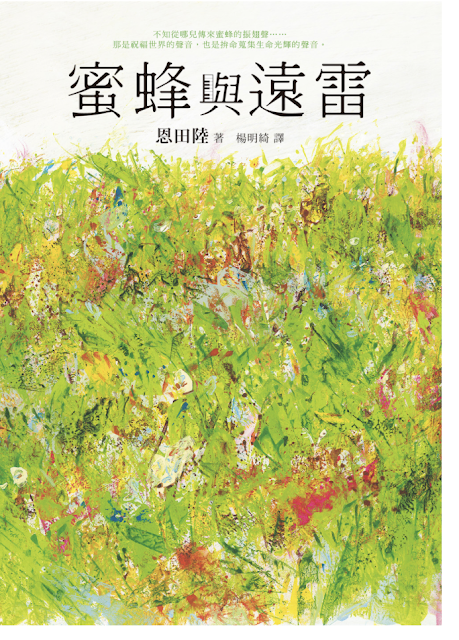

Readmoo-蜜蜂與遠雷(恩田陸)

Readmoo-書城是我電子書的來源之一，比起Kobo書城，Readmoo書城的檢索介面更直覺，而且檢索的結果也相當符合使用者的需求，相較之下，Kobo的中文書檢索介面不管怎麼搜尋，就是會有不相關雜魚出現在檢索結果中(我實在不知道為什麼Kobo的中文檢索可以做的這麼差)，也因此有些書我會在Readmoo買。最近因為重新整理Readmoo帳號中的電子書書櫃，赫然發現這一本曾經在台灣造成許多讀者討論的蜜蜂與遠雷，想說既然這本書這麼有名，就拿來看看吧!
這本以鋼琴音樂大賽為背景的小說，以文字來描述各個音樂家的作品，實在是很新奇的概念，雖然大部分的音樂我都沒聽過，不過還是覺得蠻有趣的。而這本書的主角主要有4個。
風間塵
是一位極具天賦的孩子，家中沒有鋼琴，但是憑著過人的天賦及直覺，依舊可以彈出讓人印象深刻的音樂。在一場比賽中，一位幾乎不會收學生的鋼琴大師霍夫曼，居然破例親自指導這位孩子，讓許多人甚至評審都大為不解。評審在聽過他的音樂之後，甚至有一種憤怒的感覺，覺得這個孩子一直在打破及挑戰古典樂的既定傳統，也不斷的挑戰評審的底線。
榮傳亞夜
天生具有優秀的鋼琴天賦，再加上母親的栽培，年紀輕輕就展現高度的才華，甚至12歲就可以開個人的演奏會，達成同年紀甚至成人都無法達成的成就。只是他的母親突然過世，讓他頓時迷惘起來，也找不到以往對音樂的熱情，也找不到自己心中的音樂。直到因為濱崎老師以及小奏的勸說，讓亞夜在半推半就的情形下，參加了鋼琴比賽，但是當他聽到風間塵的音樂之後，居然喚起亞夜心中那股想要彈琴，以及西歡音樂的心情。
馬薩爾
因為媽媽有日本血統的的關係，所以小時候的馬薩爾有在日本生活並求學過，但是日本實際上對外國人並不友善，在一次偶然的機會下，馬薩爾遇見了榮傳亞夜，榮傳亞夜很開心的把馬薩爾拉去一起學鋼琴。沒想到馬薩爾有驚人的鋼琴天賦，連榮傳亞夜的老師都驚訝不已，馬薩爾後來進入了茱麗亞音樂學院。馬薩爾最大的夢想，是想要做出始於自己的樂曲，就好比一百多年前那些偉大的作曲家，把他們的音樂初次公諸於世一樣，帶給世人感動。
高島明石
相較於前面三位橫空出世的天才鋼琴手，高島明石就比較顯得平凡，但是並不代表他就沒有出色的彈奏技巧。高島從小在奶奶家的養蠶的倉庫(?)練琴，雖然有被人嘲笑，但是他出色的琴藝，仍然擄獲許多女生的心。然而高島在出社會後，選擇放棄以音樂維生的念頭，並且跟從小就青梅竹馬的女友結婚。只是在明石心中仍然無法放下音樂，明石的妻子也十分支持明石，儘管明石無法像一般鋼琴家加一樣，有充分的時間可以練琴，但是明石依舊不放棄，報名了這次比賽。而他的記者好友知道後，也打算替明石拍攝一個鋼琴比賽的特集。
這本書每次描寫參賽者彈奏音樂的場景，就好像以前小時候看的中華一番的卡通，每次聽到好聽的音樂，身後就會出現波浪一樣，然後聽者就會出現很享受或是好幸福的表情。或許作者無意效仿中華一番中人們吃到美味後幸福的模樣，但是這本書描寫因為聽音樂而感到幸福的場景，卻讓我不由得想起前者，這也是讀這本書最大的樂趣之一。
延伸閱讀:
Moo Converter另外，美國購物代運可參考:
https://a1253247.blogspot.com/p/hopshopgo-vs-spexeshop.html
對板球有興趣的可參考:
https://a1253247.blogspot.com/2022/05/cricket-line-written-by-admin-24-10.html
對生活飲食有興趣，可參考: